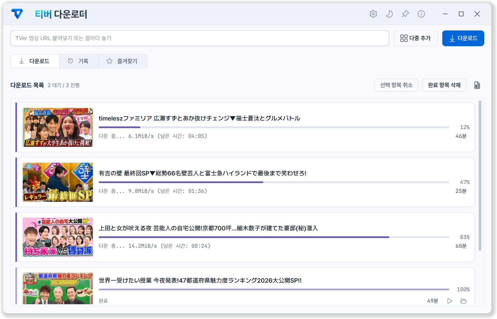
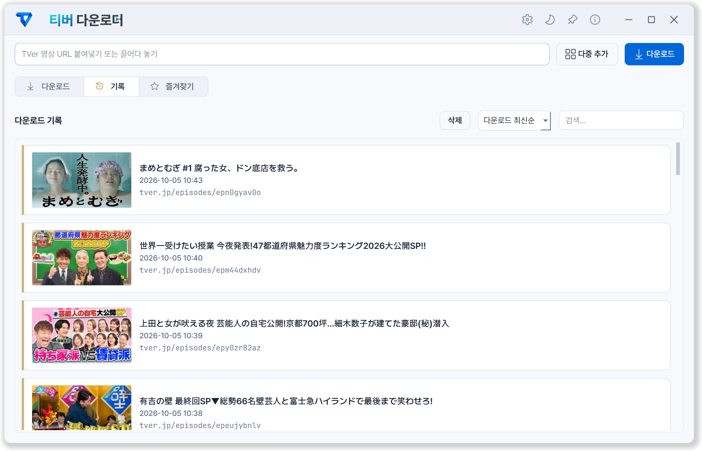
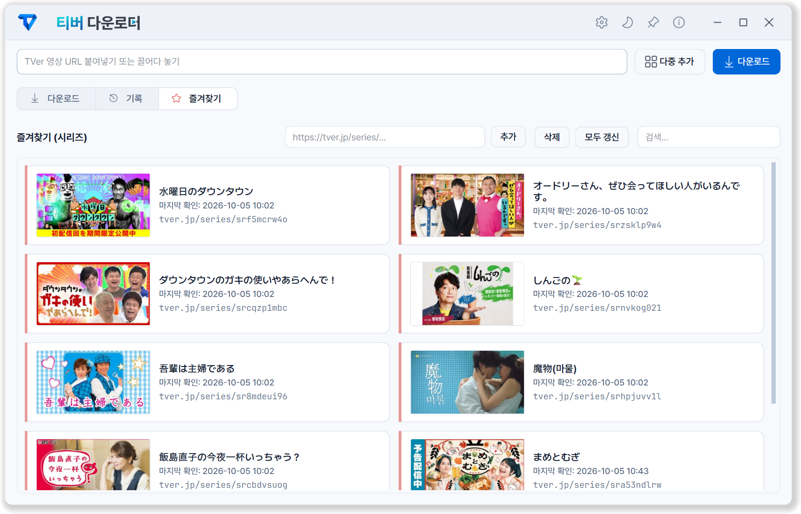
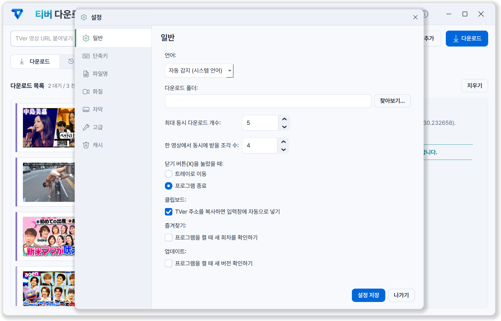
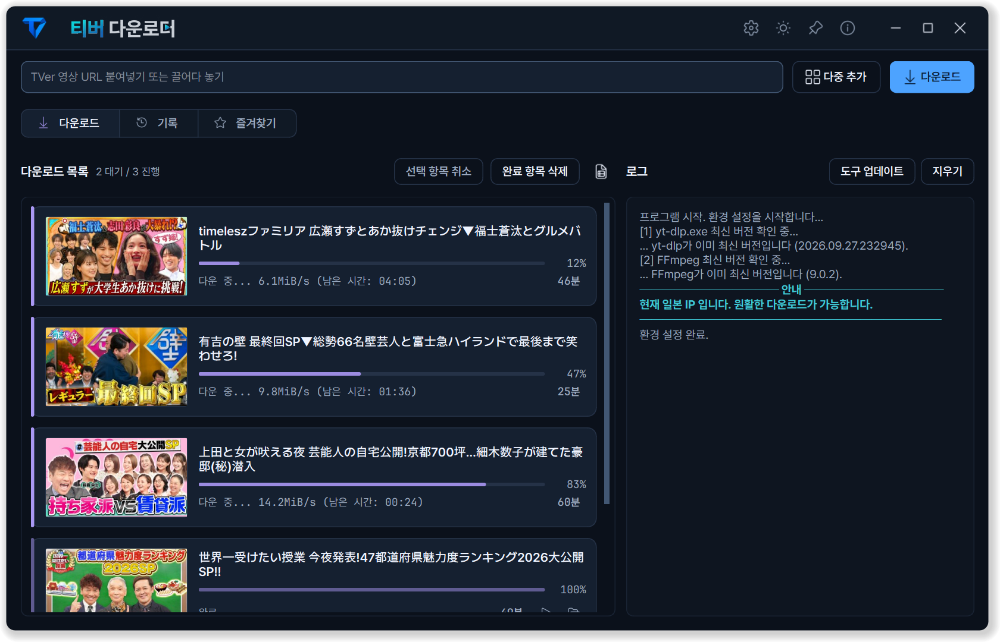
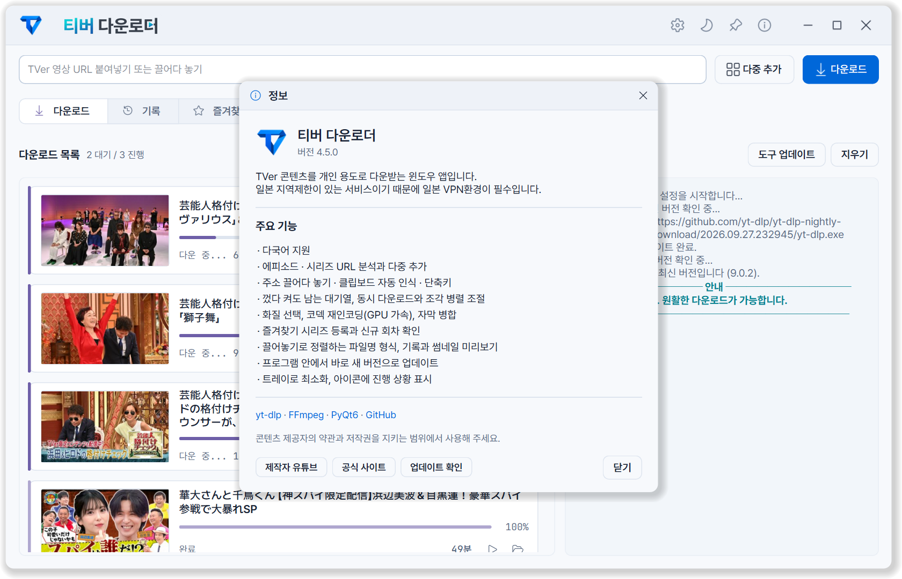

한 회부터,
시리즈 전체까지.
주소를 복사하거나 끌어다 놓으세요. 시리즈에서 원하는 회차를 골라 한 번에 받고, 여러 조각을 동시에 내려받습니다.
COPY. SELECT. DOWNLOAD.좋아하는 프로그램의 주소만 가져오세요.
시리즈 전체 받기부터 자막, 파일 정리까지. 한 창이면 충분합니다.
일본 VPN이 필요합니다.TVer는 일본 IP에서 이용할 수 있습니다.
프로그램이 시작할 때 현재 접속 국가를 알려 드립니다.

Ready in three steps
설치 과정 없이. 필요한 도구는 앱이 알아서 준비합니다.
원하는 폴더에 압축을 풀고 TVerDownloader.exe를 실행하세요. yt-dlp와 FFmpeg는 자동으로 준비됩니다.
일본 서버에 연결해 주세요. 앱에서 현재 접속 국가를 확인한 뒤 다운로드를 시작하면 됩니다.
주소를 복사하면 입력칸이 채워집니다. 다운로드를 누르세요. 시리즈라면 원하는 회차를 골라 받을 수 있습니다.
Take a closer look
다운로드부터 기록, 즐겨찾기, 설정까지. 프로그램 화면 그대로입니다.
Your personal TVer library





Thoughtfully simple
주소를 가져오는 순간부터 파일이 정리될 때까지.
영상에 집중할 수 있도록, 나머지는 앱이 챙깁니다.
주소를 복사하거나 끌어다 놓으세요. 시리즈에서 원하는 회차를 골라 한 번에 받고, 여러 조각을 동시에 내려받습니다.
COPY. SELECT. DOWNLOAD.즐겨찾기에 담아 두면 새 회차를 확인해 줍니다. 같은 시리즈의 공유 주소는 하나로 모으고, 기록과 즐겨찾기는 파일이 손상되면 백업에서 복원합니다.
즐겨찾기 · 다운로드 기록제공되는 일본어 자막을 영상에 넣거나
SRT · VTT 파일로 따로 저장하세요.
원본을 유지하거나 AVC · HEVC로 변환하세요. NVIDIA 하드웨어 가속도 지원합니다.
방송일, 시리즈, 회차의 순서를 바꾸세요. 저장될 파일 이름을 미리 볼 수 있습니다.
익숙한 언어, 편안한 테마로 시작하세요. 언어는 고르는 즉시 바뀝니다.